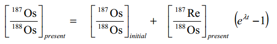

Rhenium-Osmium Systematics
Measuring the trillionths?
Shaumik Daityari / @ds_mik
http://sdaityari.github.io/rhenium.osmium.systematics
Rhenium
- Symbol "Re"
- Atomic number 75
- Heavy
- Silvery-White
- Last naturally occurring element with a stable nucleus to be added to the Periodic Table
- Alloys used in filaments of instruments, catalysts in chemical and petroleum industries
- Average Concentration of 1 ppb
- Oxidation states from -1 to +7
- Two stable isotopes (185, 187)
Osmium
- Symbol "Os"
- Atomic number 76
- Hard, Brittle
- Bluish-White
- Densest Naturally Occurring Element (specific gravity - 22.59)
- Alloys are highly durable and extremely hard
- Fountain pen tips and electrical contacts
- Oxidation states from -2 to +8
- Seven naturally occurring isotopes(184, 186, 187, 188, 189, 190, 192)
Where are they located?
Credits: Wikipedia.svg/1280px-Periodic_table_(polyatomic).svg.png){kind=link}
Rhenium and Osmium
- Practically sister elements
- Rare only in Earth's crust
- Siderophiles - Iron loving
- Dissolved in molten Iron - present in the core
- Minor quantities left in crust and mantle - less than 1 ppb
- Instruments of high precision (NTIMS)
- Rhenium is also a chalcophile - forms sulfides (Rehniite)
Thermal Ionization Mass Spectrometry
- Also called surface ionization
- Material coated on a heated metal surface
- Material evaporates into ions due to the heat
- Negative or Positive depends on the charge of the ions
- Governed by the Saha-Langmuir equation
Saha Langmuir Equation

- β - Ionization Efficiency
- EI - First Ionization Potential
- EA - Electron Affinity
- g - partition functions*
- Φ - Work function of filament
- k - Boltzmann constant
A Mass Spectrometer

Credits: DĄBEK and HALAS (2007)
The Rhenium-Osmium Clock
- Rhenium is very rare outside the core
- 187Rhenium is slightly radioactive
- 187Rhenium converts into 187Osmium when a neutron decays to a proton (β decay)
- Half life - 42.3 billion years (~ 10 x age of Earth)
- Osmium is compatible (no preference in absence of iron)
- Rhenium is highly incompatible
- Any rock that undergoes melting in the mantle stops its Re-Os clock
The Rhenium Osmium systematics


The Isochron
Applications
Extraterrestrial Occurrence (1) - Crater size
- Meteorites add osmium to the sedimentary record.
- Meteorite osmium hasn't gone through 4 billion years of mantle evolution
- Larger pulses of osmium in the record of seafloor sediments point to asteroid impacts
- Could be used to find out how big the crater was
- Paquay et al (2007)
Extraterrestrial Occurrence (2) - Age of meteorite cores
- Meteorite cores contain iron
- Presence of Re and Os (as they are siderophile)
- Age of the core can be determined
- Creaser et al (1993)
Absolute Dating of Mineralization Events
- Rhenium-osmium dating performed on molybdenite, a rhenium-enriched sulfide
- 40Ar/39Ar dates were used, but they were affected by post-ore thermal events and slow cooling
- Tintina Gold Belt, Alaska (Selby et al, 2002)
- Eureca Deposit, Zimbabwe (Selby et al, 2001)
THE END

Any questions?